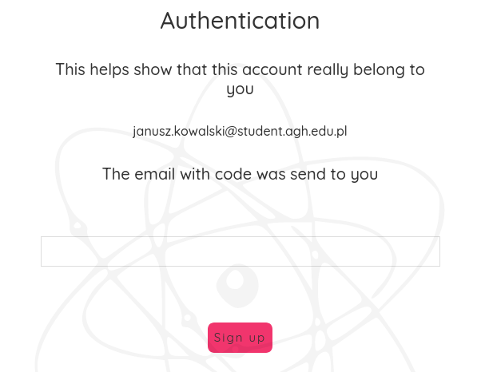
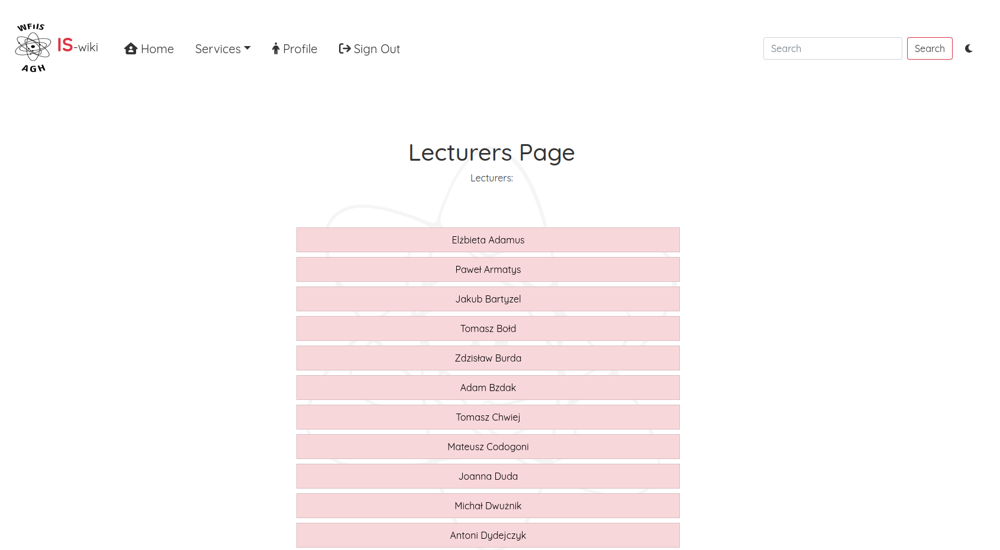

Poradnik użytkownika
Wejść na stronę można za pomocą linku IS-WIKI.
Rejstracja Użytkownika
Aby przejść do okna rejstracji użytkownika należy użyć przycisku Sign Up, przeniesie on nas na strone rejstracji. Należy uzupełnić formularz swoimi danymi, używając poczty uczelnianej.

Nastpnie przejdziemy na stronę, gdzie będziemy mogli podać kod potwierdzający rejstrację, który zostanie wysłany na podanego mail-a w formularzu.
Jeżeli wszystko zostało prawidłowo wykonane dosatniem powiadomienie o sukcesie rejstracji.
Logowanie Użytkownika
Aby przejść do okna logowania użytkownika należy użyć przycisku Sign In.
Usługi
Po zalogowaniu główna funkcjonalność znajduje się w zakładce services.
Przedmioty
Jest to podstrona służąca znajdowaniu opini o przedmiotach oraz ich prowadzących, dodatkowo umożliwiona jest funkcjonalność dodawania komentarzy. Na stronie głównej mamy możliwość ustawienie filtra czy przedmiot jest obowiązkowy czy też nie, wybieram interesujący nas semestr a następnie przedmiot.
Po przejściu do interesującego nas przedmiotu ukazują nam się prowadzący przedmiotu, oraz opinie, również możemy dodać własną.
Strona wykładowców
Jest to podstrona służąca znajdowaniu opini i dodawaniu opini o wykładowcach.
Po przejściu do profilu interesującego nas prowadzącego, mamy możliwość odczytanie kontaktu w postaci numeru telefonu i adresu e-mail. Funkcjonalność dodania opini oraz ich odczyt, dodatkowo widnieje lista prowadzonych przedmiotów przez wykładowce.

Profil
Widzimy w niej nasze dane(Imię, Nazwisko, Adres e-mail).